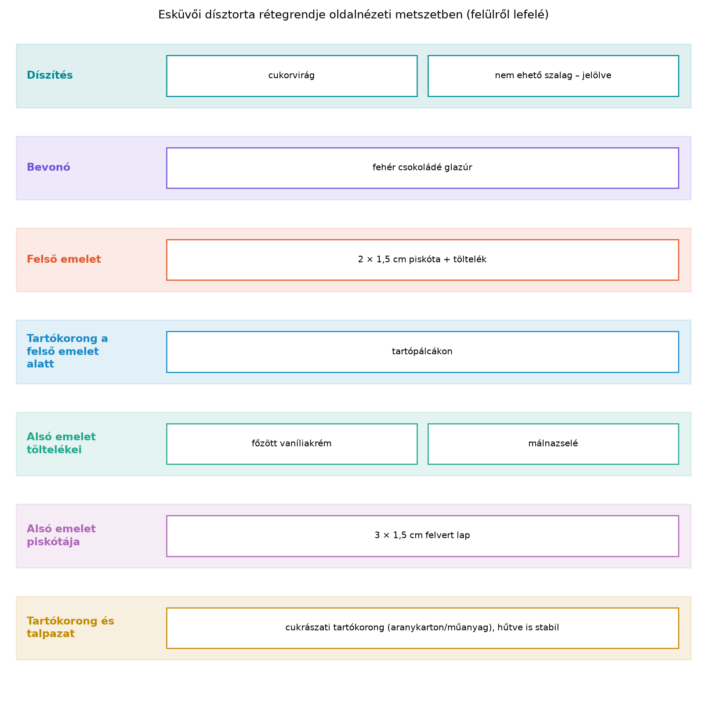

Képzeld el, hogy a műhelyben egy vendég azzal a kéréssel állít be, hogy a kislánya 6. születésnapjára rózsaszín, egyszarvús, háromemeletes tortát szeretne, gluténmentes piskótával, eperkrémmel és friss gyümölccsel. A kolléga nem tudja fejből, pontosan milyen legyen a minta, a dísz, a méret és a felirat. Ilyenkor nem elég szóban egyeztetni: készíts sütemény- és dísztortarajzot. A rajz a cukrász műszaki terve. Megmutatja a tészta felvágását, a rétegek sorrendjét, a díszek elhelyezését, a színeket és a méreteket. A rajz alapján a megrendelő jóváhagyja a tervet, a műhely pedig pontosan tud dolgozni. Ugyanez a rajz a szakmai vizsga vizsgaremekének is az alapja.
A dísztortarajz nem egyszerű „szép kép”, hanem arányos műszaki rajz, amelyet utólag is ellenőrizni lehet. Ha a rajz hibás – például rossz a rétegsor vagy hiányzik a méret –, a kész torta sem lesz megfelelő. Ebben az alfejezetben megtanulod a tésztafelvágási és alakítási rajzot, a süteménymetszet rajzát, majd a dísztorta felül- és oldalnézeti tervét.

A diagram egy alulról felfelé építkező esküvői torta rétegsorát mutatja, a metszetnek megfelelően felül a díszítéssel, alul a talpazattal. A gyakorlatban ezt a rétegsort a metszetrajzon méretarányosan, milliméterben vagy centiméterben kell megadni.
Definíció. A tésztafelvágási rajz olyan méretezett alaprajz, amely megmutatja, hogy egy kinyújtott tésztalapból hány darab, milyen alakú terméket vágunk ki, és hol lesz hulladék. Célja a takarékos anyagfelhasználás, az egyenletes darabméret és a gyors, biztonságos munka.
Definíció. Az alakítási rajz a termék formázásának lépéseit mutatja, például hajtás, csavarás, fonás, töltés vagy sütés előtti bemetszés. Általában 3–6 kis vázlatból áll.
Definíció. A süteményrajz egy termék metszeti rajza, amely a rétegeket, töltelékvastagságot, bevonatot és díszítőelemeket ábrázolja. A rajz mellett mindig szerepel a termék neve, az alapmennyiség és a felhasznált allergének sora.
Definíció. A dísztortaterv színes felül- és oldalnézeti rajzból, metszetből és rövid technológiai adatlapból áll. A terv tartalmazza az alkalom, az adagszám, a méretek, a színek, a felirat, a díszítési elemek, az allergének, a tárolási hőmérséklet és a szállítási feltételek adatait.
Jogszabály. A dísztorta akkor is élelmiszer, ha díszített. A rajz mellett a tervnek figyelembe kell vennie a fogyasztói tájékoztatás és az allergénjelölés követelményeit (1169/2011/EU rendelet szerint). A nem ehető díszt (például műanyag figura, szalag, pálca) a terven és a késztermék tájékoztatóján jelölni kell. A tárolási hőmérséklet és a szállítási idő határértéke a termék összetételétől függ; mindig a gyártói adatlap és a hatályos útmutató szerint add meg (ellenőrizendő: hatályos NÉBIH-útmutató).
Az uzsonnasüteményeknél – linzer, pogácsák, vajas kifli, fánk, hajtogatott élesztős termékek – a felvágási rajz védi meg a tésztát a felesleges gyúrástól és a túlzott hulladéktól. Minél többször gyúrjuk újra a leeső részeket, annál jobban melegszik a tészta, és annál több sikért dolgozunk ki. A termék rágós, zsugorodó, egyenetlen lehet. Ezért a felvágási rajzot már a nyújtás előtt el kell készíteni.
A következő mintarajz egy kiszúrással készülő termék felvágási rajzát mutatja a fenti 50 × 30 cm-es lapon: Ø 6 cm-es kiszúróval, négyzetes elrendezésben 8 × 5 = 40 linzerkarika fér el, a sraffozott hulladék kb. 24,6 %. A rajzon a lap mérete, a darabok sorszáma, a méretvonalak és a hulladék is szerepel.
Gyakorlati tipp. A felvágási rajzot soha ne a tésztára, hanem a munkalap mellé helyezett papírra vagy vékony műanyag sablonra rajzold. A lisztes, zsíros tészta elmosná a jelöléseket, és az élelmiszerrel érintkező felület nem szennyeződhet.
A süteményrajz akkor jó, ha a metszetből egyértelműen leolvasható, hogy milyen tészta, milyen töltelék, milyen bevonat kerül a termékbe. A rajz nem helyettesíti a receptet, hanem kiegészíti a technológiai lappal.
A dísztortaterv két legfontosabb rajza a felülnézet és az oldalnézet. A felülnézet a torta tetejét mutatja, ahogyan a vendég először látja. Az oldalnézet a torta magasságát, az emeleteket, a bordűrt és a díszítés oldalirányú elhelyezkedését ábrázolja.
A felülnézeti rajzon a torta alapformáját – kör, négyzet, szív, ovális – mérethelyesen rajzold meg. Kerek tortánál a középpontból oszd fel a körlapot a kívánt szeletszámra. A 12 szeletes tortánál a központi szög . A rajzon ez segít ellenőrizni, hogy a felirat és a fő dísz ne essen pontosan a vágási vonalra.
A felülnézeti rajzon jelöld:
A felirat hosszát előre becsüld meg. Egy 24 cm átmérőjű torta kerülete körülbelül , de a feliratot soha ne a szélére tervezd. A feliratdoboz szélessége a Szegélydíszek és feliratok alfejezet szabálya szerint az átmérő mínusz kétszer a szegélygyűrű és az 1–1,5 cm-es szabad sáv. Ha a szegélygyűrű 2–3 cm, a 24 cm-es tortán ez kb. cm és cm között van. A kb. 22 cm hosszú „Boldog születésnapot, Anna!” felirat egy sorban ezért nem fér el: két sorba kell törni, vagy kisebb betűvel kell írni.
Az oldalnézet a torta magassági kiterjedését mutatja. Emeletes tortánál az alsó és felső emelet átmérőjének, magasságának és a köztük lévő tartószerkezetnek az aránya a legfontosabb. A biztonságos emeletes torta alsó emelete jellemzően 5–8 cm-rel nagyobb átmérőjű, mint a felső (tanulási példa (ellenőrizendő: üzemi gyakorlat)); a felborulást nem az átmérőkülönbség, hanem az alsó emeletbe szúrt tartópálcák és a tartókorong akadályozza meg, ezek hordják a felső emelet súlyát. Az oldalnézeten rajzold be:
A mintarajz a felül- és az oldalnézetet egymás alatt mutatja: az alátétkorongokat vastag fekete vonal, a rejtett tartópálcákat szaggatott vonal, a díszelemeket számozott jelmagyarázat, a színt mintázat jelöli.
A színezésnél használd a cukrászati gyakorlatban megszokott megnevezéseket: „halvány rózsaszín vajkrém”, „rubinpiros tükörbevonó”, „elefántcsontfehér étcsokoládé”. A szín mellett rögzítsd az alapanyagot is, mert a szín önmagában nem informatív: attól még lehet tejszínes, vajas vagy zselatinos bevonat.
Az alkalom határozza meg a forma, a színvilág, a felirat és a díszítés jellegét. Az alábbi táblázat a gyakori alkalmakra mutat be alapvető tervezési szempontokat. Az összes szín- és formajavaslat ízlésbeli, nem kötelező előírás.
| Alkalom | Jellemző forma | Színvilág | Díszítési motívumok | Kiemelt technológiai szempont |
|---|---|---|---|---|
| Születésnap | kör, négyzet, számforma | kedvenc színek, évszakhoz igazodva | gyertya, név, kor, hobbi | a gyertyák és a tűz forrása legyen biztonságos; a felirat ne csússzon a vágási vonalra |
| Névnap | kör vagy ovális | a névnaphoz kötődő virágok színei | virág, gyümölcs, hagyományos motívum | a virág lehet ehető vagy nem ehető; nem ehető virágot jelölni kell |
| Karácsony | kerek, fenyőforma, rönk | arany, piros, zöld, fehér | hópehely, fenyő, mézeskalács, csillag | a mézeskalács-dísz száraz legyen, ne szívja meg a krémet; a fahéj és szegfűszeg aromája erőteljes, adagolása mérsékelt |
| Húsvét | ovális, tojásforma, bárány | pasztell sárga, zöld, rózsaszín | tojás, nyúl, bárány, barka | a marsolált cukorfigurák felülete száraz legyen, a zselé ne engedjen vizet |
| Gyermek | állat, mesehős, játékfigura | élénk, vidám alapszínek | egyszarvú, dinoszaurusz, autó, korona | gyermekeknek szánt termékbe alkohol nem kerülhet; a kis figurák ne legyenek fulladásveszélyesek; a színezékek adagolása a gyártói adatlap szerint |
| Esküvő | emeletes kör vagy szív | fehér, krém, halvány pasztell | rózsa, gyöngy, oszlop, kezdőbetűk | az emelet stabil legyen, a szállítás hideg láncban történjen, a hideg út alatt ne izzadjon meg a bevonat |
| Évforduló | kör, szív | a pár kedvenc színei, nemesfém hatás | évszám, közös emlék, monogram | a fényes tükörbevonó és a fényes csokoládé temperálása pontos legyen, a felirat kakaóvajjal készüljön |
A rajz akkor használható, ha a méretek arányosak, a színek visszaadhatók, és a hiányzó adatok kiszámíthatók.
Szabály. A tervrajzon a méretarány legyen feltüntetve. A leggyakoribb kézi rajz az 1:2 vagy 1:5 méretarány: 1 cm a rajzon 2 vagy 5 cm-t jelent a valós tortán. A méreteket a rajzon a valós méret szerint írd fel, ne a kicsinyített rajzméretet.
Szabály. A színeket ne csak szóban, hanem színmintával és alapanyag-megnevezéssel add meg. Ha a tervet később más kolléga készíti el, egyértelmű legyen, hogy „vajkrém” és nem „tejszínhab”, vagy fordítva. Ez azért is fontos, mert a késztermék állaga, allergénprofilja és tárolása más lehet.
Szabály. A rajzon a díszek tömege és a tészta teherbírása összhangban legyen. Egy nehéz cukorfüggő dísz könnyen belesüllyed a habos krémbe. A terven jelöld, ha a dísz alá tartókorongot vagy csokoládéból készült támaszt kell helyezni.
A tervlaphoz gyakran ki kell számítani a felhasználandó bevonóanyag mennyiségét vagy a szeletek számát. Ehhez a késztermék geometriai adatait használjuk.
Számítás. Mennyi felületet kell bevonni egy 24 cm átmérőjű, 6 cm magas torta esetén?
A torta oldalpalástjának felülete:
A felső lap felülete:
A teljes bevonandó felület:
Ezt az adatot a csokoládé- vagy tükörbevonó adagjának becsléséhez használjuk. Egy vékony glazúrréteghez négyzetméterenként 1,0–1,5 kg bevonóanyagot becsülnek, tehát itt -re körülbelül 0,1–0,15 kg anyag szükséges (ellenőrizendő: gyártói adatlap).
Számítás. Egy téglalap alakú süteményrajzhoz a szeletek méretét kell meghatározni. Egy 30 × 50 cm-es, 4 cm magas zserbó-szerű süteményt 5 × 6 = 30 darabra vágunk. Mennyi lesz egy darab tömege, ha a teljes tömeg 4,2 kg?
Egy darab tömege:
A rajzon a vágási hálót fel kell tüntetni: 5 sor × 6 oszlop, azaz 30 egyforma téglalap.
Cél. Készíts tésztafelvágási rajzot egy uzsonnasüteményhez, majd színes dísztortatervet felül- és oldalnézettel, adott alkalomra.
Eszközök és anyagok. A4 vagy A3 fehér rajzlap, négyzetrácsos vázlatpapír, 2H és HB ceruza, radír, vonalzó, körző, szögmérő, színes ceruzák vagy filcek, sablonok, színkör, írólap, műanyag írófelület.
Higiéniai munkakezdés. A rajzot tiszta felületen készítsd. A rajzlap ne érintkezzen nyers tojással, tejszínnel vagy liszttel. Ha a műhelyben rajzolsz, viselj munkaruhát, hajhálót, és a kezed legyen száraz, tiszta. Az élelmiszerrel érintkező felületeket ne tedd a rajzlap alá, hogy elkerüld a keresztszennyeződést.
Biztonsági korlát. A rajzeszközök használata nem igényel gépkezelést, de a körző hegye és a szike éles lehet. A vágáshoz használt szerszámot mindig becsukva, gyermekektől elzárva tárold. A színes filcek oldószere nem élelmiszer-összetevő, ezért a rajz ne kerüljön a torta mellé közvetlenül élelmiszerrel érintkező felületre.
Lépések.
A kész rajzot az alábbi szempontok szerint értékeld:
Hiba. A felvágási rajz aránytalanul kicsi, ezért a
kolléga nem tudja pontosan kiszúrni a formákat.
Ok. A rajzot nem méretarányosan készítetted, vagy
hiányzik a méretvonal.
Javítás. Rajzold újra 1:2 vagy 1:5 méretarányban,
minden méretet centiméterben feltüntetve.
Hiba. A dísztortaterv gyönyörű, de a felirat nem fér
ki a torta szélére, vagy a vágási vonalra esik.
Ok. A felülnézeti rajzon nem jelölted a vágási
osztásokat és a felirat hosszát.
Javítás. Számítsd ki a feliratdoboz szélességét (átmérő
mínusz kétszer a szegélygyűrű és a szabad sáv), és ehhez méretezd a
betűmagasságot a Szegélydíszek és feliratok
alfejezet képletével. A rajzon vonalzóval mérd vissza a hosszt.
Hiba. A rétegrend a metszeten nem egyezik a
recepttel.
Ok. A rajz készítésekor nem a technológiai lapot
használtad, hanem emlékezetből rajzoltál.
Javítás. Mindig a receptúrával és a technológiai lappal
együtt dolgozz; a rétegsort a rajzon és a receptben is ellenőrizd.
Hiba. A terven szerepel „gluténmentes”, de a
műhelyben közös eszközökkel dolgoznak.
Ok. A mentes állítás feltételrendszere nem
teljesül.
Javítás. Ne írj mentes állítást, ha nincs elkülönített
gyártás és allergénvizsgálat. A terven csak összetevő-alapú allergéneket
jelölj.
Egy cukrászda esküvői tortát készít. A párral a vezető cukrász először telefonon egyeztet, majd egy rajzos tervet küld. A terv felülnézete 1:2 méretarányban mutatja a 24 cm alsó és a 16 cm felső emeletet. A felülnézeten a koszorúformájú cukorvirágok és a monogram helyzete szerepel. Az oldalnézet jelzi, hogy az alsó emelet 7 cm, a felső 6 cm magas, a köztük lévő tartópillér 3 cm-es, és a pillért csokoládéval burkolják. A metszetrajz megadja, hogy az alsó emeletbe három piskótalap és vaníliakrém-málna töltelék kerül. A tervlap alján szerepel: „Allergének: glutén, tojás, tej. Figyelem: a virágok nem ehetők.” A pár e-mailben jóváhagyja a tervet, majd a műhely a tervrajz alapján rendeli meg a virágokat és készíti el a tortát. A szállítás során a torta hűtött dobozban utazik, a tervlap szerint legfeljebb +5 °C-on, 45 percnél nem hosszabb ideig (ellenőrizendő: hatályos hideglánc-útmutató). A rajz nélkül a pár nem tudott volna előre dönteni, a műhely pedig könnyebben hibázhatott volna a forma vagy a dísz helyét illetően.
1. feladat (A). Fogalmazd meg röviden, mi a különbség a tésztafelvágási rajz és a süteménymetszet rajza között.
2. feladat (A). Hány darab 8 cm átmérőjű kerek linzerlapot tudsz kiszúrni egy 40 × 25 cm-es omlós tésztalapból, ha a köröket egyenes sorokba rendezed? Add meg a kiszúrt terület és a hulladék százalékát is. A kör területéből számolt darabszám miért csak felső korlát?
3. feladat (B). Rajzold meg egy linzerkarika tésztafelvágási rajzát: a kinyújtott lap 48 × 32 cm, a kiszúró 8 cm átmérőjű. Hány kör fér el egyenes sorokban, és mekkora a hulladék? A hulladékot jelöld a rajzon.
4. feladat (B). Tervezz egy 12 szeletes, 24 cm átmérőjű torta felülnézeti rajzát. Add meg a központi szöget és a feliratdoboz legnagyobb szélességét (szegélygyűrű 2,5 cm, szabad sáv 1,25 cm), és készítsd el a rajzot 1:2 méretarányban, színes ceruzával. Számítsd ki a „BOLDOG” felirat (6 betű) betűmagasságát a Szegélydíszek és feliratok alfejezet képletével, ha a felirat az így kapott szélességbe fér.
5. feladat (C). Elemezd a következő hibás esetet. Egy tanuló dísztortatervet készít: a rajz gyönyörű, de a terven nincs feltüntetve az allergénsor, a nem ehető virág nincs megjelölve, és a felirat a vágási vonalra esik. Írd le, miért hibás a terv, és hogyan javítanád ki.
6. feladat (D). Készítsd el a vizsgaremek előkészítéseként egy évfordulós dísztorta teljes tervét: válassz 18 cm-es kerek formát, 16 szelethez. Add meg a felül- és oldalnézetet, a metszetet, a színkódot, az allergéneket és a tárolási adatokat. A feladatot a Alkalmi dísztorták tervezése és készítése és a Sablonok: pasztillarajzok, térbeli és figurális sablonok alfejezetek alapján végezd el.
1. feladat. A tésztafelvágási rajz a kinyújtott tésztalapra rajzolt kivágási terv; célja a darabok elrendezése és a hulladék csökkentése. A süteménymetszet a késztermék rétegeit mutatja, alulról felfelé, a töltelékek és bevonatok sorrendjét és vastagságát.
2. feladat. A 8 cm átmérőjű kör sugara , területe . A lap területe . A területből számolt csak felső korlát, mert a körök között mindig marad hézag. Egyenes sorokban: kör fér egy sorba, , tehát 3 sor; összesen kör. A kiszúrt terület , a hulladék .
3. feladat. Egy sorba kör fér, és sor, tehát kör rajzolható. A lap területe , a kiszúrt terület , a hulladék . A rajzon a maradékot jelöld egyszer visszadolgozható hulladékként.
4. feladat. A központi szög . A feliratdoboz szélessége a 24 cm átmérőjű tortán , ezért kb. 16 cm-es dobozzal számolunk. A „BOLDOG” 6 betű: . A rajzot 1:2 méretarányban kell elkészíteni, azaz a torta átmérője a rajzon 12 cm, a feliratdoboz 8 cm széles, a betűmagasság kb. 1,5 cm.
5. feladat. A terv hibái: (1) hiányzó allergénsor, (2) a nem ehető virág nincs jelölve, (3) a felirat a vágási vonalra esik. A javítás: a metszet mellé fel kell tüntetni a 14 jelölendő allergéncsoport érintett elemeit; a nem ehető díszt a terven és a készterméken jelölni kell; a feliratot a belső harmadra kell áthelyezni, és a vágási osztásokat figyelembe véve ütemezni.
6. feladat. A gyakorlati terv értékelési szempontjai: a felül- és oldalnézet arányos, a méretek szerepelnek, a metszet rétegsora egyezik a recepttel, a színkód alapanyag-megnevezést is tartalmaz, az allergénsor teljes, a nem ehető díszek jelöltek, a tárolási hőmérséklet és a szállítás feltüntetett. A várt eredmény egy teljes tervlap, amely a vizsgaremek technológiai kísérőjéhez csatolható.
A sütemény- és dísztortarajz a cukrász műszaki terve. A tésztafelvágási rajz a kinyújtott tésztalapból való gazdaságos kivágást mutatja, a méretek és a vágási vonalak feltüntetésével. Az alakítási rajz a formázás lépéseit ábrázolja. A süteménymetszet alulról felfelé tünteti fel a rétegeket, a töltelékeket és a bevonatot. A dísztortaterv felül- és oldalnézettel, metszettel, színkóddal, allergénsorral és tárolási adatokkal készül. A felülnézeti rajzon a vágási osztásokat és a felirat helyét is jelölni kell; a felirat a belső harmadra kerüljön. Az oldalnézet az emelet magasságát és a tartópilléreket mutatja. A rajz méretaránya legyen feltüntetve, általában 1:2 vagy 1:5. A nem ehető díszeket jelölni kell. A tervlap a szakmai vizsga vizsgaremekének dokumentációjához is felhasználható.